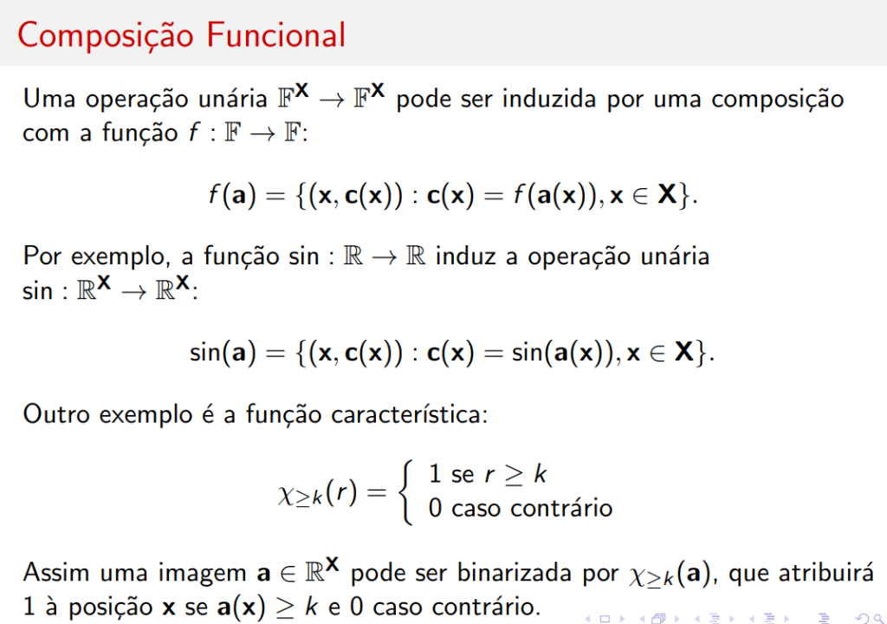
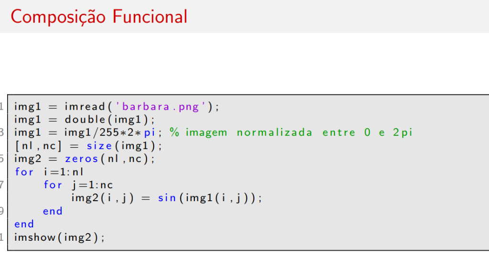
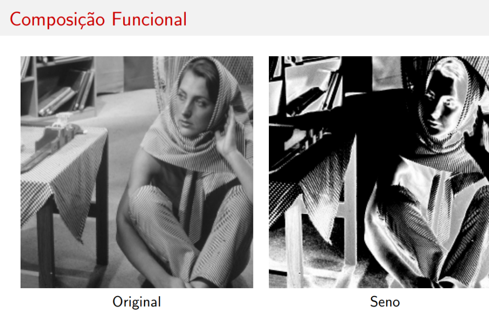
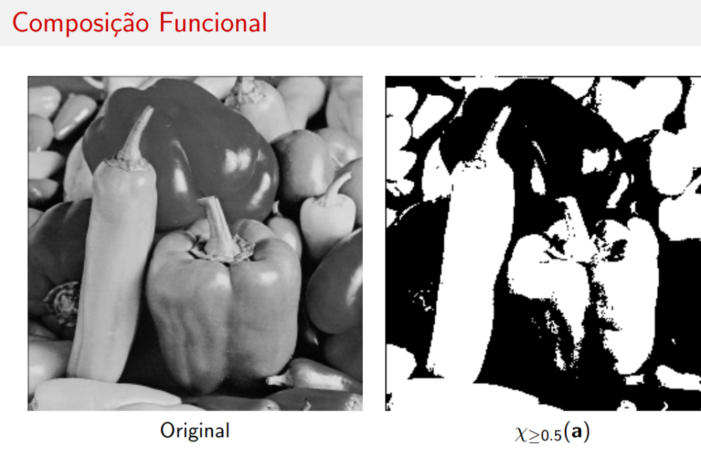
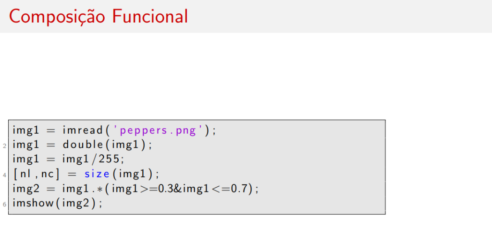
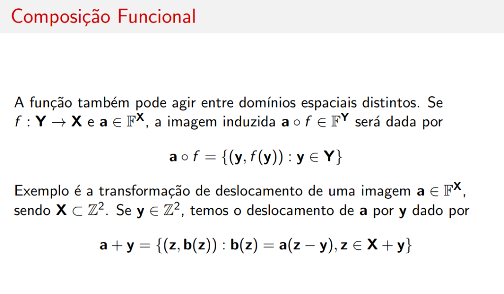
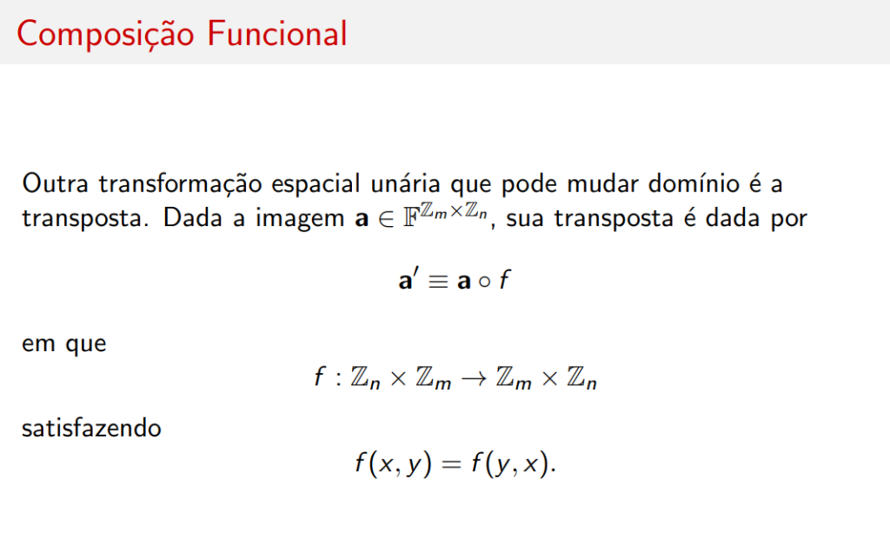

Composição Funcional
Introdução

Uma operação unária \( \mathbb{F}^{\mathbf{X}} \rightarrow \mathbb{F}^{\mathbf{X}} \) pode ser induzida por uma composição com a função \( f : \mathbb{F} \rightarrow \mathbb{F} \):
Exemplo: Função Seno
Por exemplo, a função \( \sin : \mathbb{R} \rightarrow \mathbb{R} \) induz a operação unária \( \sin : \mathbb{R}^{\mathbf{X}} \rightarrow \mathbb{R}^{\mathbf{X}} \):
Código MATLAB

img1 = imread('barbara.png');
img1 = double(img1);
img1 = img1/255*2*pi; % imagem normalizada entre 0 e 2pi
[nl, nc] = size(img1);
img2 = zeros(nl, nc);
for i = 1:nl
for j = 1:nc
img2(i, j) = sin(img1(i, j));
end
end
imshow(img2);
Resultado Visual

| Imagem | Descrição |
|---|---|
| Original | Imagem Barbara normalizada entre 0 e \( 2\pi \) |
| Seno | Aplicação de \( \sin \) pixel a pixel - cria efeito de ondulação |
Exemplo: Função Característica (Binarização)
Outro exemplo é a função característica:
Assim uma imagem \( \mathbf{a} \in \mathbb{R}^{\mathbf{X}} \) pode ser binarizada por \( \chi_{\geq k}(\mathbf{a}) \), que atribuirá 1 à posição \( \mathbf{x} \) se \( \mathbf{a}(\mathbf{x}) \geq k \) e 0 caso contrário.
Código MATLAB

img1 = imread('peppers.png');
img1 = double(img1);
img1 = img1/255;
[nl, nc] = size(img1);
img2 = img1 >= 0.5; % binarização com limiar k = 0.5
imshow(img2);
Resultado Visual

| Imagem | Descrição |
|---|---|
| Original | Imagem Peppers em escala de cinza |
| \( \chi_{\geq 0.5}(\mathbf{a}) \) | Imagem binarizada - branco onde \( a(x) \geq 0.5 \), preto caso contrário |
Aplicação
A binarização por limiar é uma das operações mais básicas em segmentação de imagens, separando objetos do fundo com base na intensidade.
Resumo
| Função | Operação Induzida | Resultado |
|---|---|---|
| \( \sin : \mathbb{R} \rightarrow \mathbb{R} \) | \( \sin(\mathbf{a}) \) | Efeito de ondulação |
| \( \chi_{\geq k} : \mathbb{R} \rightarrow \{0, 1\} \) | \( \chi_{\geq k}(\mathbf{a}) \) | Binarização |
| \( \log : \mathbb{R}^+ \rightarrow \mathbb{R} \) | \( \log(\mathbf{a}) \) | Compressão de faixa dinâmica |
| \( \exp : \mathbb{R} \rightarrow \mathbb{R}^+ \) | \( \exp(\mathbf{a}) \) | Expansão de faixa dinâmica |
| \( f^{-1} \) (inversa) | \( f^{-1}(\mathbf{a}) \) | Negativo da imagem |
Limiarização por Intervalo

Uma variante da função característica é a limiarização por intervalo:
A qual permite a limiarização (thresholding) de uma imagem \( \mathbf{a} \), definida na linguagem da álgebra de imagens como:
equivalente a:
Código MATLAB

img1 = imread('peppers.png');
img1 = double(img1);
img1 = img1/255;
[nl, nc] = size(img1);
img2 = img1 .* (img1 >= 0.3 & img1 <= 0.7);
imshow(img2);
Resultado Visual

| Imagem | Descrição |
|---|---|
| Original | Imagem Peppers |
| \( \mathbf{a} \cdot \chi_{[0.3,0.7]}(\mathbf{a}) \) | Pixels fora do intervalo [0.3, 0.7] ficam pretos |
Composição sobre Domínio Espacial

A função também pode agir entre domínios espaciais distintos. Se \( f : \mathbf{Y} \rightarrow \mathbf{X} \) e \( \mathbf{a} \in \mathbb{F}^{\mathbf{X}} \), a imagem induzida \( \mathbf{a} \circ f \in \mathbb{F}^{\mathbf{Y}} \) será dada por:
Exemplo: Deslocamento (Translação)
Exemplo é a transformação de deslocamento de uma imagem \( \mathbf{a} \in \mathbb{F}^{\mathbf{X}} \), sendo \( \mathbf{X} \subset \mathbb{Z}^2 \).
Se \( \mathbf{y} \in \mathbb{Z}^2 \), temos o deslocamento de \( \mathbf{a} \) por \( \mathbf{y} \) dado por:
Transposta de Imagem

Outra transformação espacial unária que pode mudar domínio é a transposta.
Dada a imagem \( \mathbf{a} \in \mathbb{F}^{\mathbb{Z}_m \times \mathbb{Z}_n} \), sua transposta é dada por:
em que:
satisfazendo:
Geometricamente
A transposta equivale a uma reflexão em relação à diagonal principal da imagem.